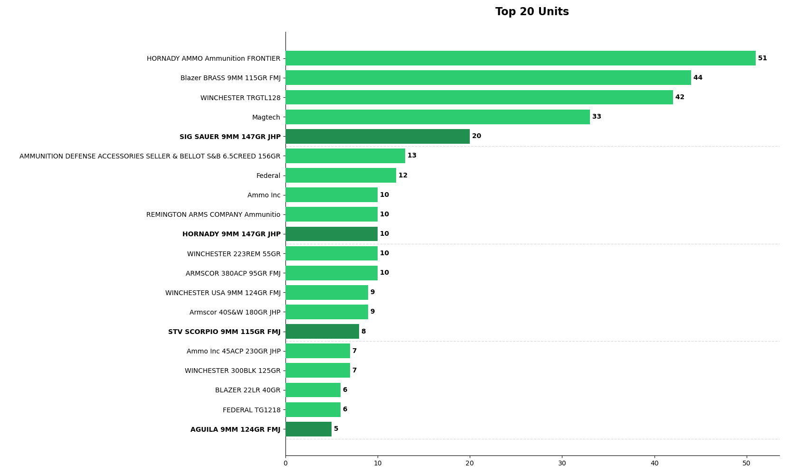
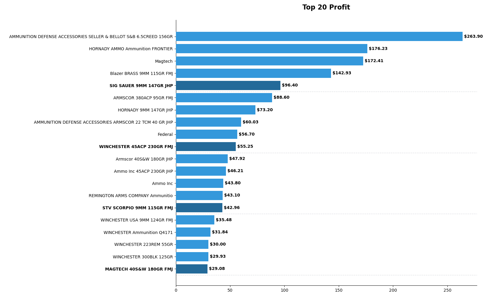

High-Ticket Asset Inventory Pipeline & Revenue Dashboard
An object-oriented Python desktop application automating Point-of-Sale (POS) data ingestion, string sanitization, regex extraction, and dynamic business intelligence reporting.
1. Executive Summary & System Overview
Local retail and inventory operations often suffer from rigid, legacy Point-of-Sale (POS) exports that output unstructured spreadsheets. This tool was engineered to bridge that gap, providing local business operators with an automated data pipeline that instantly ingests raw Excel or CSV sales logs, filters specific category blocks (e.g., Ammunition & Firearms), and calculates real-time unit demand and gross profitability.
Designed with a native Tkinter Graphical User Interface (GUI) and powered by Pandas and Matplotlib, the application guarantees 100% mathematical reconciliation while delivering clean, scrollable visual dashboards.
2. Data Engineering & Pipeline Architecture
The backend processing script relies on robust boundary detection and vectorized data manipulation to process messy exports safely without manual spreadsheet cleanup.
Core Currency Sanitization Function
To convert raw currency strings containing symbols and commas into clean numeric floats for aggregation, the following pandas utility is utilized:
Dynamic Boundary Scanning
The parser scans the primary column to dynamically locate category start headers (Ammunition (Firearms)) and tracks row indices until encountering closing subtotal flags, ensuring accurate data slicing regardless of report length.
3. Interactive Visualization Engine & Sample Outputs
Generated charts utilize custom color mapping and data sorting algorithms to enhance readability across large inventory datasets:
- Scrollable Dynamic Windowing: Dynamically calculates figure heights based on dataset length paired with smooth mousewheel event bindings.
- Visual Grouping Emphasis: Automatically highlights every 5th item from the top with darker color saturations and bolded grid separators.
- Thread & EXE Compatibility: Forces Matplotlib to use the
TkAggbackend explicitly to ensure stable cross-platform desktop compilation.

Matplotlib Output — Top 20 Units Sold

Matplotlib Output — Top 20 Most Profitable